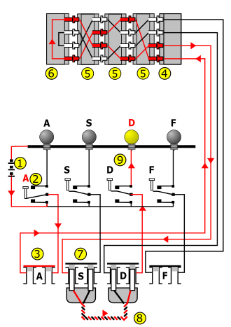
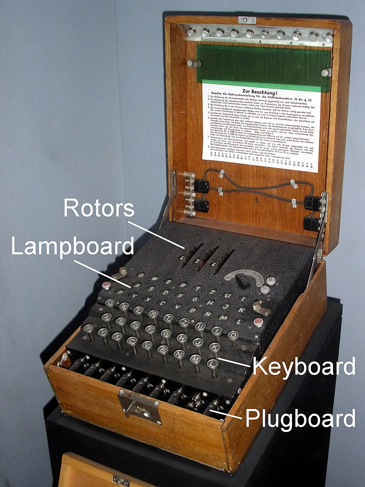

The Enigma machine is a cipher device developed and used in the early- to mid-20th century to protect commercial, diplomatic, and military communication. It was employed extensively by Nazi Germany during World War II, in all branches of the German military. The Enigma machine was considered so secure that it was used to encipher the most top-secret messages.
The Enigma has an electromechanical rotor mechanism that scrambles the 26 letters of the Latin alphabet. In typical use, one person enters text on the Enigma's keyboard and another person writes down which of the 26 lights above the keyboard illuminated at each key press. If plaintext is entered, the illuminated letters are the ciphertext. Entering ciphertext transforms it back into readable plaintext. The rotor mechanism changes the electrical connections between the keys and the lights with each keypress. In essence, the rotor's motion means every letter is encrypted with a different cryptographic key, making it highly resistant to conventional cryptographic attacks based on patterns the keys leave in the resulting cyphertext.
For the system to be bidirectional, the receiving station would have to know and use the exact settings employed by the transmitting station to decrypt a message. This consisted of a series of initial settings that were generally changed daily, based on secret key lists distributed in advance. Due to the large number of messages transmitted every day, this could allow the system to be attacked if enough messages were intercepted. To complicate this, operators would choose some other (ideally) random settings of the rotors, say "GTZ", and then use the day settings to encode that key and send it. They would then change the rotors to those chosen settings and send the rest of the message. That meant that only those three letters were set to the day code, although normally typed twice for a total of six characters. This made it seemingly impossible to gather enough cyphertext to attack it.

